第 23 讲：前后端联调和 CORS（5.5）
在之前的章节中，我们已经分别完成了两项独立工程：
1. 前端工程：基于 Next.js 开发的高颜值响应式个人作品集与文字实验室界面，但页面上展示的文本仍然写死在静态的 site.js 中；
2. 后端工程：基于 FastAPI 构建了两个接口——GET /api/profile（获取个人主页数据）与 POST /api/analyze（提交文本并进行校验与多维度分析），但此前仅在终端中使用 curl 进行过单元调试。
此时此刻，前端与后端犹如两个各自能跑、却互不相识的独立王国。
本节我们将正式拉开前后端集成联调（Integration）的序幕，让运行在浏览器中的前端脚本跨越端口向后端发起真实请求。在此过程中，我们将直面现代 Web 全栈开发中最著名的经典门槛——跨源资源共享（CORS）与 OPTIONS 预检（Preflight）机制，并建立生产级的环境变量集中配置体系。
flowchart TD
subgraph FrontendApp ["前端应用 (Next.js 客户端)"]
direction TB
BrowserPage["浏览器页面 (http://localhost:3000)"]
FetchModule["动态 fetch() 异步请求模块"]
EnvConfig[".env.local 环境变量注入"]
EnvConfig --> FetchModule
BrowserPage --> FetchModule
end
subgraph SecurityBorder ["浏览器安全屏障 (SOP 同源策略)"]
direction TB
CheckOrigin{"检查协议、域名、端口是否一致?"}
OriginHeader["注入 Origin: http://localhost:3000"]
PreflightCheck{"复杂请求触发 OPTIONS 预检?"}
CORSResponse{"后端是否返还 Access-Control-Allow-Origin?"}
CheckOrigin -->|跨源| OriginHeader
OriginHeader --> PreflightCheck
PreflightCheck --> CORSResponse
end
subgraph BackendApp ["后端服务 (FastAPI 异步微服务)"]
direction TB
ListenPort["监听 http://localhost:8000"]
CORSMiddleware["FastAPI CORSMiddleware 守门中间件"]
ProfileRoute["GET /api/profile 个人信息接口"]
AnalyzeRoute["POST /api/analyze 文本分析接口"]
ListenPort --> CORSMiddleware
CORSMiddleware --> ProfileRoute
CORSMiddleware --> AnalyzeRoute
end
FetchModule --> SecurityBorder
SecurityBorder <-->|HTTP 报文交互| BackendApp
CORSResponse -->|校验通过，解除拦截| BrowserPage
1. 联调准备：双进程常驻与调试环境规划
(参考时间: 01:10)
前后端分离架构的调试，必须在本地操作系统中同时并行运行两个服务进程：
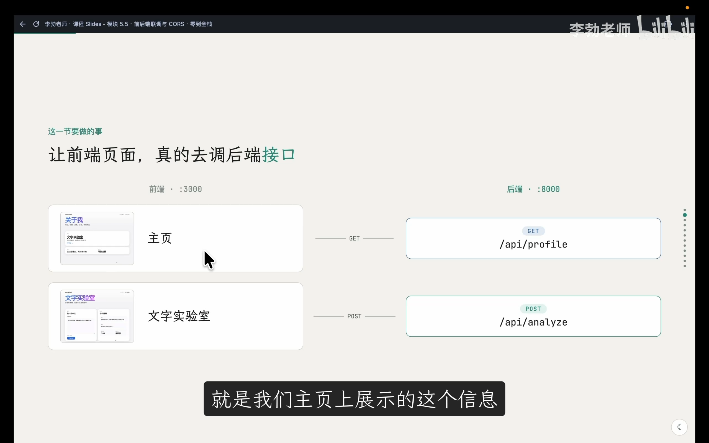
📷 本节联调架构大纲与两类接口流程
在 B 站中打开 (00:00:45)
- 前端开发服务器：运行在
http://localhost:3000（由 Next.js 驱动）； - 后端 API 服务器：运行在
http://localhost:8000（由 FastAPI / Uvicorn 驱动）。
为了便于左右对比观测控制台日志，我们可以开启两个终端窗口。视频中演示使用了支持分屏特性的现代化终端工具 Ghostty，也可以直接在 VS Code 内部通过拆分终端（Split Terminal）实现双屏监控：
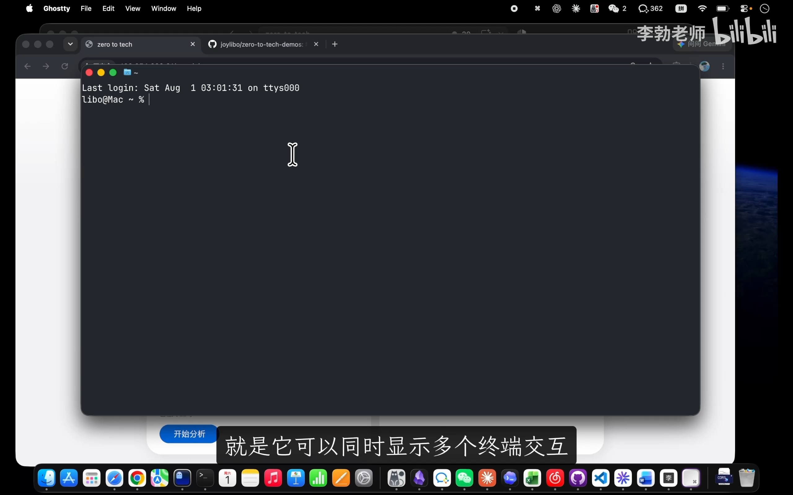
📷 Ghostty 双终端分屏并行运行前端与后端
在 B 站中打开 (00:01:50)
# 终端 1：启动前端 Next.js 服务
cd zero-to-tech
npm run dev
# 终端 2：启动后端 FastAPI 服务
cd zero-to-tech/backend
fastapi dev
2. 丰富后端接口：同步真实页面完整字段
(参考时间: 03:00)
在第 22 讲中，为了讲解极简入门，我们的 profile 字典仅包含了 heroTitle 和 heroSubtitle。但前端主页要呈现完整的个人名片、关于我、作品列表等内容，数据字段远比这两个字段丰富。
我们将原本静态的 data/site.js 中的 home 结构完整迁移至后端的 main.py 中，并刻意将主标题微调为 "关于我（来自后端）" 作为视觉锚点，以便在浏览器中一目了然地确认数据是否真正来源于后端：
from fastapi import FastAPI
from pydantic import BaseModel
app = FastAPI()
class AnalyzeRequest(BaseModel):
text: str
profile = {
"heroTitle": "关于我（来自后端）",
"heroSubtitle": "项目, 创意, 灵感, 心得, 我的作品",
"about": "这里是一段从后端 API 动态获取并实时渲染的个人简介内容...",
"projects": [
{"title": "全栈教程", "desc": "从零单排全栈技术体系", "link": "/course"},
{"title": "文字实验室", "desc": "基于 AI 与 NLP 的文本情感分析", "link": "/lab"}
]
}
@app.get("/api/profile")
def get_profile():
return profile
@app.post("/api/analyze")
def analyze(req: AnalyzeRequest):
return {
"text": req.text,
"score": 0.5,
"label": "偏平静",
"pinyin": "（模块 6 再说）",
}
保存后，后端 Uvicorn 触发热更新。在终端使用 curl 验证：
curl http://localhost:8000/api/profile
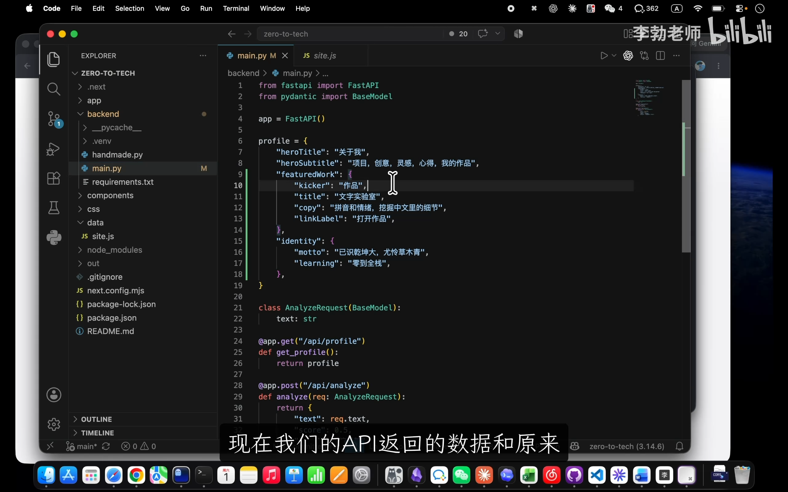
📷 curl 验证后端返回包含来自后端的完整 JSON
在 B 站中打开 (00:04:45)
后端接口就绪，返回数据无误！
3. 前端客户端组件重构：从静态到动态 fetch
(参考时间: 06:20)
接下来改造前端。前端原本的代码直接静态导入了本地 JS 文件，现在需要改为在浏览器中动态向 http://localhost:8000 发起网络请求。
我们将课程官方提供的联调示例组件（包含 HomeView.tsx、InputCard.tsx、ResultCard.tsx 等）覆盖至前端项目对应的目录中：
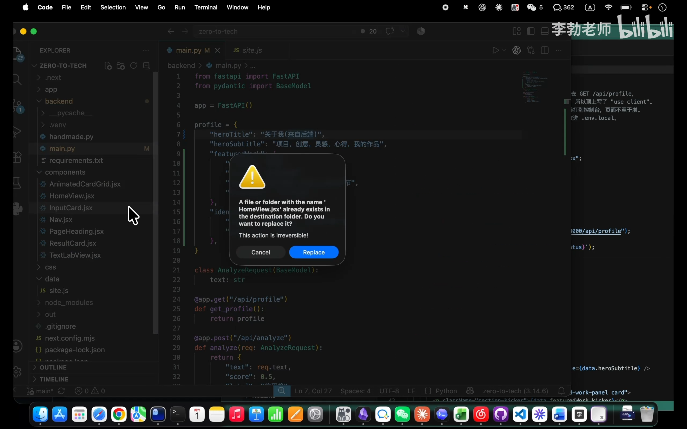
📷 将联调专用前端示例文件覆盖导入项目中
在 B 站中打开 (00:08:35)
核心改造点解析
use client声明： 在 Next.js App Router 中，默认的 Server Components 无法直接使用浏览器特定的事件监听和生命周期钩子。为了在用户浏览器中执行fetch请求并用useState/useEffect驱动 UI 重新渲染，文件首行必须显式标记'use client'。- 渐进式数据降级（Graceful Degradation）：
在请求发起且后端尚未返回的短暂空窗期内，组件依然保留本地
site.js中的默认数据进行“骨架占位”，避免页面在首屏出现刺眼的闪烁或空白。 - 事件驱动 POST：
在文字实验室的
InputCard中，用户点击“开始分析”按钮后，将文本框中的内容组装为 JSON 载荷，通过fetch('http://localhost:8000/api/analyze', { method: 'POST', ... })发送至后端。
4. 第一次翻车：排查三现场诊断法
(参考时间: 11:10)
按理说前后端都已编写完备，此时打开浏览器访问 http://localhost:3000：
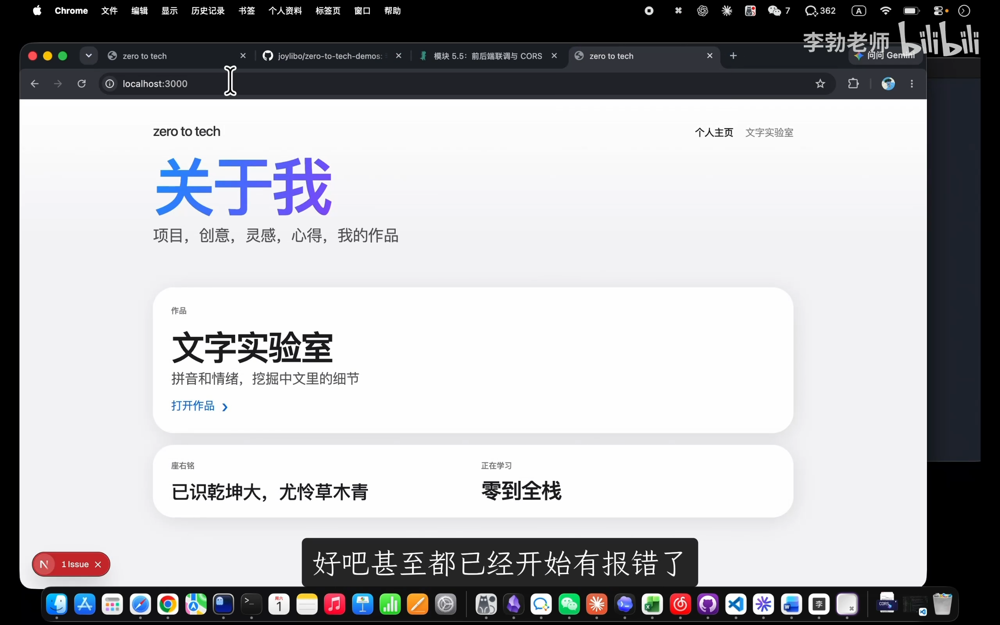
📷 前端页面渲染后数据依然保持旧貌且控制台亮红
在 B 站中打开 (00:11:20)
页面上的大标题依然是旧内容，并未展示后端的“关于我（来自后端）”！后端明明通过 curl 验证过，前端也是官方代码，数据究竟卡死在了哪一环？
[!TIP] 排查全栈网络故障的“三现场排查法”： 1. 现场一：浏览器开发者工具 Network 面板（请求是否真的发出去了？状态码是什么？） 2. 现场二：服务端的控制台终端（后端到底有没有收到请求？有没有抛出未捕获异常？） 3. 现场三：浏览器开发者工具 Console 面板（数据回到客户端后，浏览器引擎作出了什么裁决？）
现场一：查看浏览器 Network 面板
在页面按 F12 打开 Network 面板并刷新：
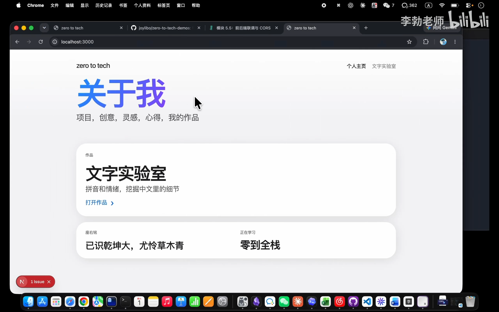
📷 Network 面板中清晰记录 profile 请求成功返回 200
在 B 站中打开 (00:12:45)
我们找到了发往 /api/profile 的网络记录，不仅请求发出去了，而且状态码赫然显示为 200 OK！这证明前端网络逻辑完全正确。
现场二：查看后端服务端控制台
切换到后端的终端窗口：
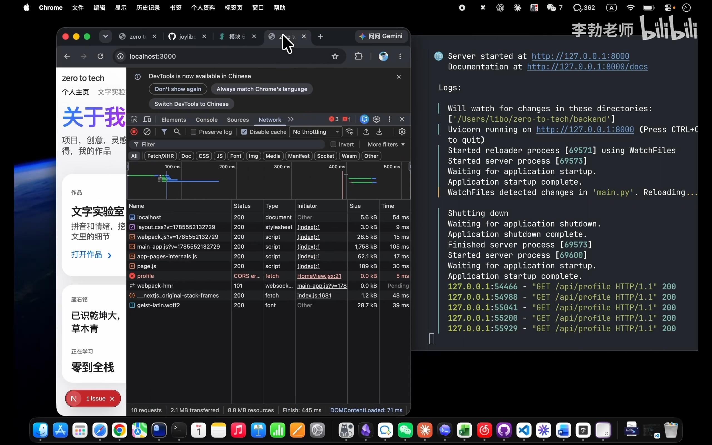
📷 后端控制台打印出了 200 响应日志
在 B 站中打开 (00:14:05)
控制台实时滚出了访问日志："GET /api/profile HTTP/1.1" 200 -。这证明请求已经到达后端，后端顺利处理并把数据完整推回了网络连接。
现场三：查看浏览器 Console 面板
既然一去一回都完成了，为什么页面就是拿不到数据？打开 Console 面板，真相大白：
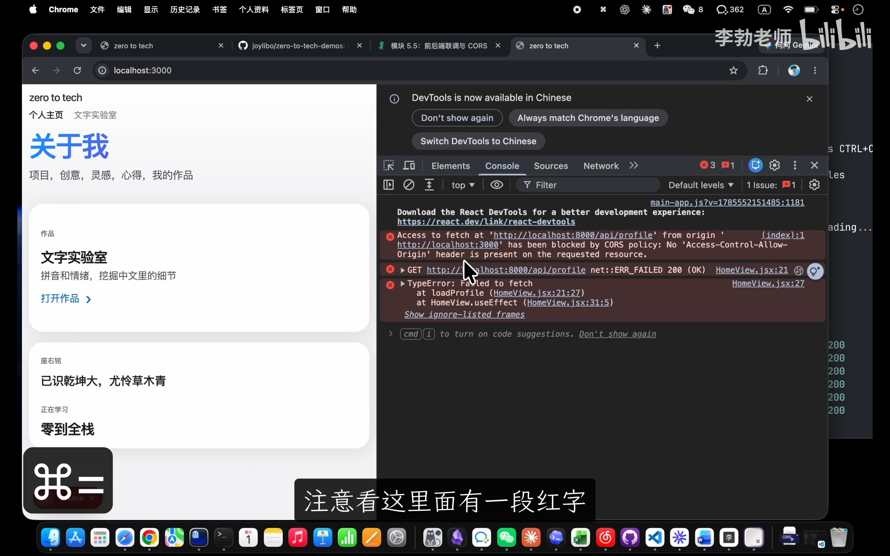
📷 Console 面板中赫然刺目的 CORS 政策拦截红字报错
在 B 站中打开 (00:14:50)
屏幕上打印出前端开发者最为熟知的刺目红字：
Access to fetch at 'http://localhost:8000/api/profile' from origin 'http://localhost:3000'
has been blocked by CORS policy: No 'Access-Control-Allow-Origin' header is present on the requested resource.
5. 探秘同源策略与 CORS 本质
(参考时间: 15:30)
为什么此前用 curl 测试一路绿灯，一换到浏览器就会被无情拦截？
[!IMPORTANT] CORS（Cross-Origin Resource Sharing，跨源资源共享）限制是且仅是“浏览器”为了保护最终用户而制定的安全围栏，绝非 HTTP 协议本身的限制，更不是服务端的故障。
curl、Postman、Python 脚本等非浏览器工具不受同源策略约束，因此永远不会被 CORS 拦截。
什么是“源”（Origin）？同源三要素
对于浏览器而言，一个合法的“源”由三项绝对要素共同界定：
classDiagram
class OriginIdentity {
+1. 协议 (Protocol: 如 http vs https)
+2. 域名 (Domain / Host: 如 localhost vs 127.0.0.1)
+3. 端口 (Port: 如 3000 vs 8000)
}
三者只要有任意一项不完全一致，浏览器便将其视为两个互不信任的“不同源（Cross-Origin）”。在我们的联调场景中：
* 前端页面跑在 http://localhost:3000；
* 后端服务跑在 http://localhost:8000；
* 协议相同、域名相同，但端口不同（3000 ≠ 8000），因此构成了典型的跨源调用。
浏览器拦截的微观过程
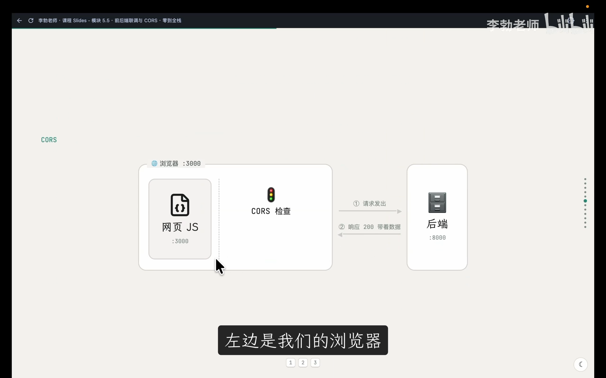
📷 CORS 跨源拦截工作流与授权响应头核验
在 B 站中打开 (00:17:05)
- 前端在
localhost:3000页面内通过 JS 发起请求，浏览器会自动在请求头中盖上公章：http Origin: http://localhost:3000 - 后端接收请求并返回正常数据；
- 响应报文进入浏览器后，浏览器的同源安全引擎立即执行核验：它翻遍了响应头，发现服务端没有返回
Access-Control-Allow-Origin响应头； - 浏览器得出结论：“服务端并未显式授权
localhost:3000的脚本读取该数据”，随即就地拉下电闸，拒绝把已到达内存的数据交给前端 JavaScript，并在控制台抛出 CORS 阻断异常。
6. 破局之道：FastAPI 中间件与 CORSMiddleware
(参考时间: 18:30)
解决该问题的钥匙在服务端手中：只要后端在响应报文中附带合法的 Access-Control-Allow-Origin 响应头，明确告知浏览器“我允许 http://localhost:3000 读取我的数据”，安全锁便会自动解除。
如果在每个接口函数里手动写 send_header，项目中有成百上千个接口将不堪重负。FastAPI 提供了优雅的全局管道——中间件（Middleware）。
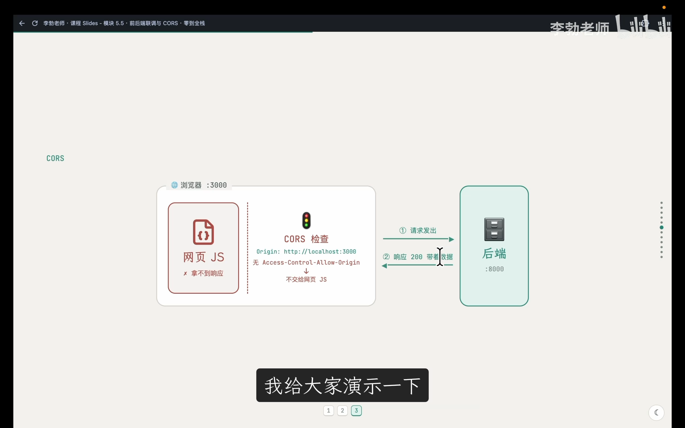
📷 中间件在请求输入与响应输出关口上的必经之路图解
在 B 站中打开 (00:19:15)
flowchart LR
ClientReq["客户端 HTTP 请求"] --> MW_In["CORSMiddleware 预处理"]
MW_In --> RouteLogic["FastAPI 业务路由处理"]
RouteLogic --> MW_Out["CORSMiddleware 后置处理<br/>(统一加盖 Access-Control-Allow-Origin 头)"]
MW_Out --> ClientResp["浏览器客户端接收带授权的响应"]
在 FastAPI 中挂载 CORSMiddleware
在 zero-to-tech/backend/main.py 中引入并激活中间件：
from fastapi import FastAPI
from fastapi.middleware.cors import CORSMiddleware
from pydantic import BaseModel
app = FastAPI()
# 挂载 CORS 中间件，向特定前端源开放授权
app.add_middleware(
CORSMiddleware,
allow_origins=["http://localhost:3000"], # 白名单放行源
)
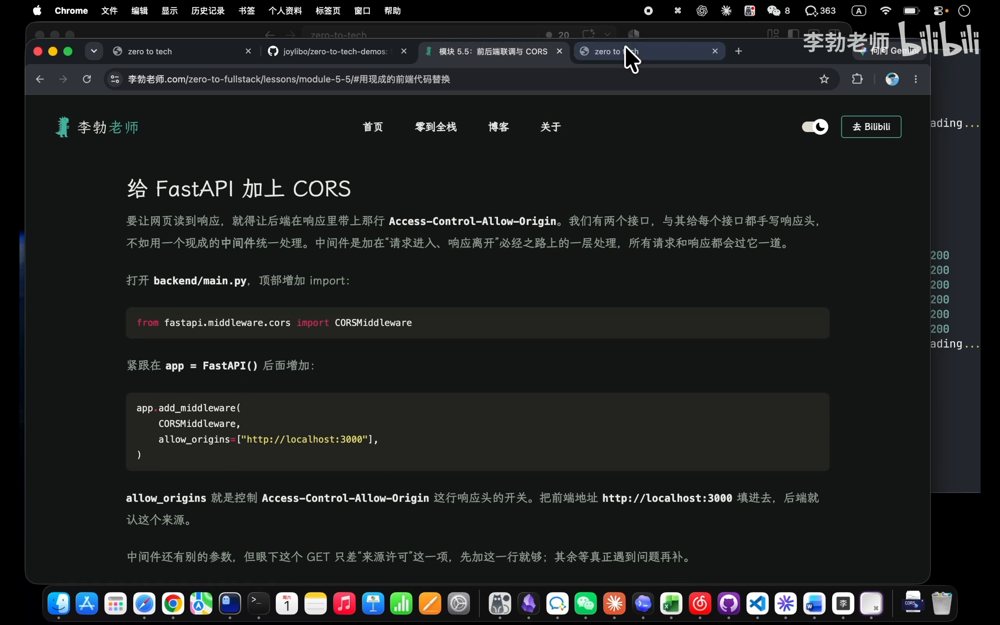
📷 在 main.py 中挂载 CORSMiddleware 并配置白名单
在 B 站中打开 (00:20:45)
代码保存后，回到浏览器刷新页面：
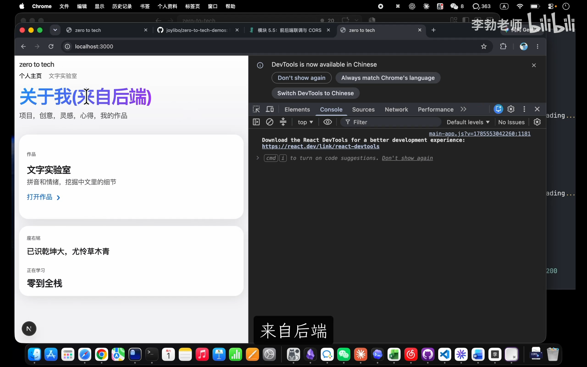
📷 刷新页面后大标题成功展示来自后端的最新数据
在 B 站中打开 (00:21:30)
大标题瞬间刷新为 “关于我（来自后端）”！检查 Network 面板，Response Headers 中赫然多出了 Access-Control-Allow-Origin: http://localhost:3000，GET 接口成功打通。
7. 第二次翻车：文字实验室的神秘 OPTIONS 预检
(参考时间: 22:30)
主页的 GET 成功了，那文字实验室的 POST 接口如何？
切换到文字实验室页面，在文本框输入一段文字并点击“开始分析”：
控制台瞬间再次飘红，页面弹出提示：TypeError: Failed to fetch。
打开 Network 面板观察发出的请求：
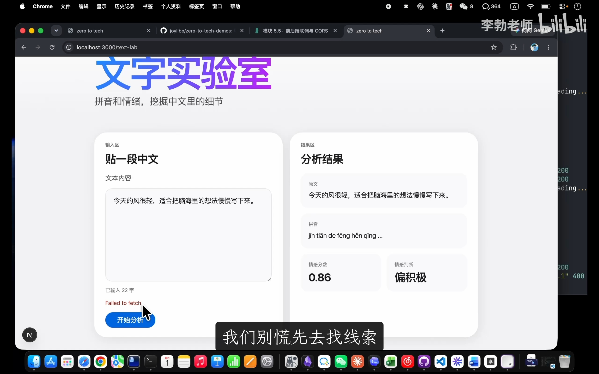
📷 Network 面板中赫然出现红色的 OPTIONS 请求报错
在 B 站中打开 (00:22:45)
奇怪的现象发生了：我们在前端代码里明明写的是 method: 'POST'，为什么 Network 面板上记录的不是 POST，而是一个名为 OPTIONS 的请求？且这个 OPTIONS 居然触发了 CORS error！
简单请求 vs 复杂请求（预检机制）
这是浏览器的又一层高级防护。在同源策略规范中，跨源请求被严格划分为两类：
| 请求类别 | 典型特征 | 浏览器策略 |
|---|---|---|
| 简单请求 (Simple Request) | 普通 GET / HEAD，且仅携带最基础的标准头 |
浏览器直接发出真实请求，事后检查响应头 |
| 复杂请求 (Preflighted Request) | POST / PUT / DELETE，或声明了 Content-Type: application/json |
浏览器严禁直接发出真实请求，必须先派兵探路（预检） |
sequenceDiagram
autonumber
actor Browser as 浏览器
participant Middleware as 后端 CORSMiddleware
participant API as 后端 analyze 业务逻辑
Note over Browser: 用户点击“开始分析”，触发 POST application/json
Browser->>Middleware: 1. 自动先行发出 OPTIONS 探路预检请求 (Preflight)
Note over Middleware: 核验请求源、方法与头部是否在白名单中
alt 预检未通过 (未放行 POST 方法)
Middleware-->>Browser: 2. 拒绝授权 (CORS error)
Note over Browser: 真实 POST 请求直接胎死腹中，严禁发出!
else 预检通过 (放行 POST 与 Headers)
Middleware-->>Browser: 2. 返回 200 OK + 允许的方法与头清单
Browser->>API: 3. 正式发出真正的 POST /api/analyze 业务请求
API-->>Browser: 4. 返回实际分析结果 JSON
end
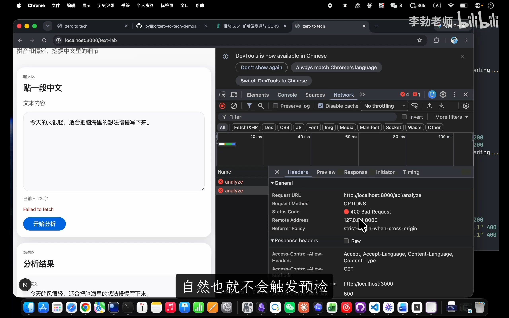
📷 简单请求与复杂请求的预检逻辑机制图解
在 B 站中打开 (00:25:50)
为什么必须存在预检？防止不可逆的严重副作用
如果是转账或删库的 POST 操作，一旦由于服务端未设防先发了出去，即便浏览器在收到结果后进行 CORS 阻断，服务端的数据库也已经被彻底修改，覆水难收！
因此，对于带有 JSON 载荷的复杂请求，浏览器坚持宁可先问后发。先发一个无害的 OPTIONS 方法向服务端打探底细：“我接下来想使用 POST 方法并携带 JSON 请求头，请问你允许吗？”
如果服务端在 OPTIONS 应答中明确点头，浏览器才会放行真正的 POST 载荷；如果不点头，真正的 POST 根本连离开浏览器的机会都没有！
8. 彻底放行：完善中间件的方法与头部白名单
(参考时间: 29:00)
此前我们的中间件配置仅写了 allow_origins=["http://localhost:3000"]，并没有告诉预检服务允许接收哪些方法和头部。当预检问询 POST 时，中间件只能按照默认策略予以回绝。
在中间件中追加 allow_methods 声明：
app.add_middleware(
CORSMiddleware,
allow_origins=["http://localhost:3000"],
allow_methods=["GET", "POST"],
)
[!NOTE] *
allow_methods：声明该接口允许被哪些 HTTP 方法跨源调用。当前项目中用到了GET和POST，如实填写即可。 * 关于allow_headers：预检其实还会问“能不能带某些请求头”。此处前端携带的Content-Type: application/json属于现代浏览器默认安全范围内的常见头，FastAPI / Starlette 中间件对此提供了开箱即用的支持，无需专门声明；将来如果请求要带自定义鉴权头（例如Authorization: Bearer <token>），才需要在allow_headers中显式放行。
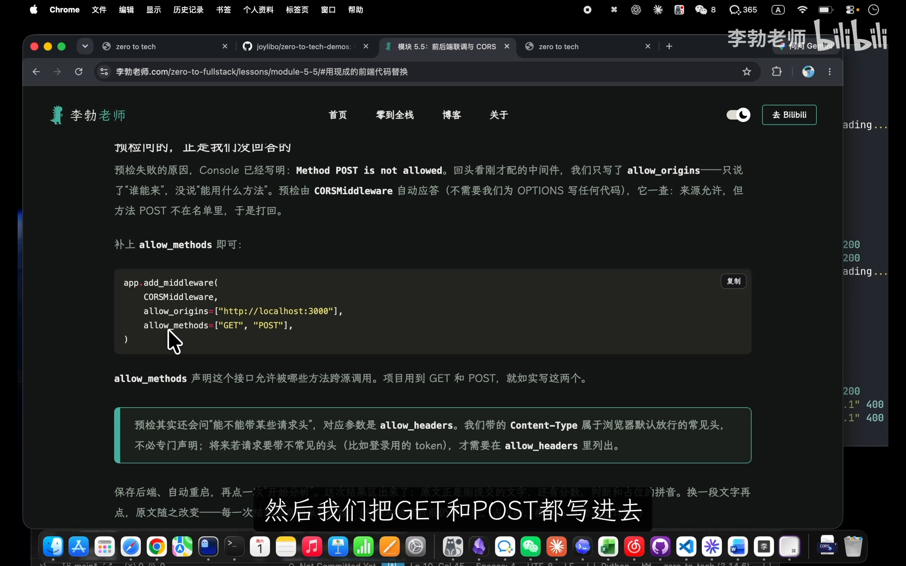
📷 中间件完善 allow_methods 与 allow_headers 配置
在 B 站中打开 (00:29:25)
保存后重新在页面点击“开始分析”：
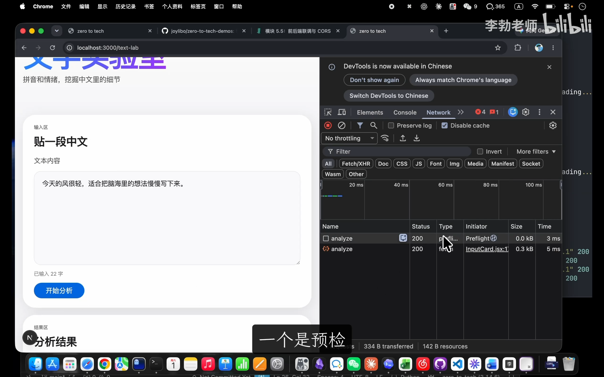
📷 OPTIONS 与 POST 双双返回 200，分析结果卡片成功点亮
在 B 站中打开 (00:31:15)
Network 面板上连贯出现了两条绿色的 200 记录：
1. 第 1 条 OPTIONS /api/analyze (200 OK)：预检成功通过；
2. 第 2 条 POST /api/analyze (200 OK)：真实业务请求成功执行！
页面下方的分析结果卡片瞬间点亮，文字、字数、情感倾向全线实时联动！
9. 工程化规范：告别代码中的 IP 硬编码
(参考时间: 33:00)
功能虽然全部跑通，但目前的代码中埋藏着一个极其危险的隐患：
我们在 HomeView.tsx 和 InputCard.tsx 中，直接将 http://localhost:8000 这串 URL 字符串硬编码（Hardcode）写死在了组件内部。
flowchart TD
subgraph BadPractice ["反模式：代码内硬编码地址"]
CodeComp1["HomeView.tsx: fetch('http://localhost:8000')"]
CodeComp2["InputCard.tsx: fetch('http://localhost:8000')"]
EnvChange["环境切换 (本地开发 vs 云端部署 1.2.3.4)"]
EnvChange -->|必须满项目查找替换，极易遗漏引发 Bug!| CodeComp1
EnvChange -->|必须满项目查找替换，极易遗漏引发 Bug!| CodeComp2
end
subgraph BestPractice ["最佳实践：环境变量集中配置"]
EnvFile[".env.local 文件<br/>NEXT_PUBLIC_API_BASE_URL=http://localhost:8000"]
ProcessEnv["process.env.NEXT_PUBLIC_API_BASE_URL"]
EnvFile --> ProcessEnv
ProcessEnv --> CodeComp1_ISO["组件 1 读取配置"]
ProcessEnv --> CodeComp2_ISO["组件 2 读取配置"]
end
在真实生产中，开发机是 localhost:8000，测试机是局域网 IP，云端生产机是顶级域名。如果写死在代码里，每次发布部署都必须修改源码并重新提交 Git，这是重大的工程禁忌。
规则：配置与代码严格分离。
创建 .env.local 环境变量文件
在前端项目根目录（与 package.json 同级）新建 .env.local：
NEXT_PUBLIC_API_BASE_URL=http://localhost:8000
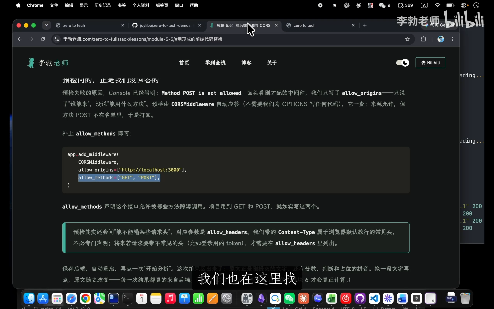
📷 在前端根目录下创建 .env.local 集中配置后端基准地址
在 B 站中打开 (00:34:05)
[!NOTE] Next.js 的命名安全边界： 变量名必须以
NEXT_PUBLIC_开头，Next.js 才会允许该配置变量在打包时被打包进客户端浏览器脚本中。普通的无前缀变量仅在 Node.js 服务端可见，以此防止后端私钥泄露。
组件动态读取环境变量
在前端组件（如 components/InputCard.jsx 与 components/HomeView.jsx）中统一通过 process.env 读取：
// 提取环境变量基准地址
const API = process.env.NEXT_PUBLIC_API_BASE_URL;
// 动态拼装请求地址
const res = await fetch(`${API}/api/analyze`, {
method: "POST",
headers: { "Content-Type": "application/json" },
body: JSON.stringify({ text }),
});
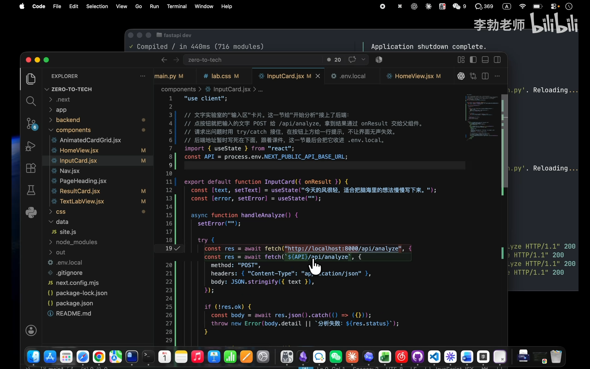
📷 组件内部改造为读取 process.env 环境变量
在 B 站中打开 (00:36:10)
[!IMPORTANT] 修改了
.env.local文件后，必须完全停止并重新启动前端开发服务器（npm run dev），新的环境变量才能在 Node.js 启动期被注入。
由于根目录 .gitignore 默认已经包含了 .env*.local，该本地环境配置文件绝不会被意外推送到公共代码仓库中。
10. 模块五全貌复盘与后续规划
(参考时间: 39:50)
至此，课程的第 5 大模块——后端与接口体系宣告圆满收官！我们完整经历了从零到全栈的关键成长跨越：
| 课时节点 | 核心突破点 |
|---|---|
| 5.1 什么是 API | 建立调用方与被调用方心智模型，掌握 curl 调试真实世界 API |
| 5.2 Python 环境设置 | 掌握多解释器共存原理，建立 venv 独立沙箱与 pip 依赖版本锁定 |
| 5.3 理解 HTTP，手搓 API | 剖析报文对称性与 curl -v 探秘，原生手搓 http.server 洞悉协议底层 |
| 5.4 FastAPI 入门 | 拥抱现代框架生产力，体验声明式路由、Pydantic 校验与 Swagger 自动文档 |
| 5.5 前后端联调与 CORS | 全栈握手，彻底打通同源策略、CORS 中间件配置、OPTIONS 预检与环境变量治理 |
在当前的代码中，我们还留有两笔明显的“业务欠账”： 1. 分析接口中的拼音、情感倾向和打分目前还是假数据； 2. 用户每次分析完的记录用完即焚，刷新后荡然无存。
在接下来的第 6 模块中，我们将跨入数据处理与持久化存储领域，引入 Python 生态强大的第三方 NLP 算法库让文本分析成真，并深入学习文件存储与数据库技术，为全栈应用注入真正的持久化生命力！